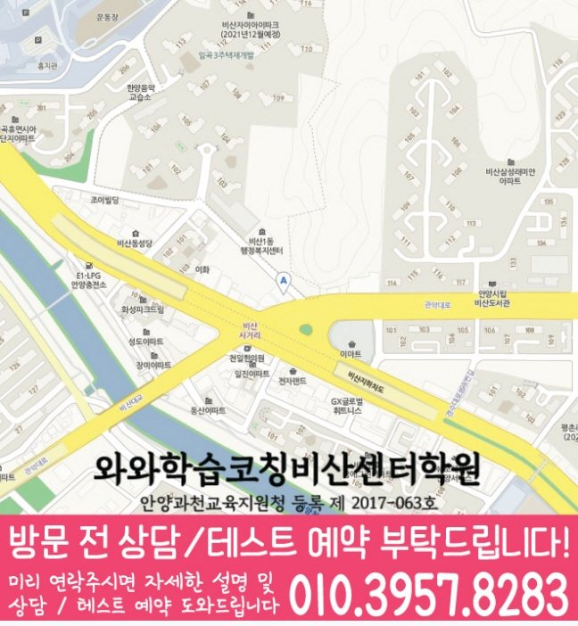

Elementary school Korean · English · Math
비산동 초등학생 국영수학원
비산동 초등학생 국영수학원 선택 전 교과 진도와 기초 학습 자료, 최근 오답과 과목별 가능 학년, 센터 위치·비용 확인 기준을 안내합니다.
01 Quick answer
비산동에서 먼저 확인할 내용
비산동에서 초등학생 국영수학원을 찾는다면 와와학습코칭센터 비산점의 과목별 가능 학년을 먼저 확인하세요. 제공된 초등학교 참고 자료와 학생의 실제 교재를 대조하고, 학생의 실제 풀이 기록에 맞게 세 과목을 같은 분량으로 늘리기보다 과목별 완료 기준과 재확인 날짜를 정해야 합니다.
대표 학생 상황
세 과목의 과제 순서와 오답 복습 시점을 스스로 정리하기 어려운 초등학생


010-6839-8283상담 전 핵심 안내
비산동에서 초등학생 학원을 찾는 학부모님을 위해, 지역 센터가 국어·영어·수학 학습 로드맵을 안내합니다. 비산동 다음 학습 단계에서는 다시 풀기 결과를 바탕으로 다음 보완 순서를 정합니다. 비산동 학습 점검에서는 오답 원인을 바탕으로 복습 시점을 정합니다. 비산동 학부모가 초등학생 국영수 수업을 찾을 때 첫 질문은 과목 수보다 현재 공백이 무엇인지입니다. 비산동 초등학생 국영수학원 기준에서 가장 먼저 확인할 점은 아이에게 많은 문제를 한꺼번에 주는 곳인지가 아니라 현재 공백을 과목별로 읽어 주는지입니다.
처음 상담에서 구분할 학습 과제
비산동 학습 점검에서는 단원별 이해도를 바탕으로 학습 상태를 구체적으로 확인합니다. 많은 문제를 먼저 풀기보다, 어휘·독해·문법/개념·연산·서술·오답 원인을 기반으로 현재 수준을 정확히 확인합니다.
영어·수학·국어 균형 학습. 영어는 어휘·문장 이해·독해 흐름을, 수학은 개념·유형·오답 패턴을, 국어는 독해·서술·문법 기초를 단계별로 관리합니다.
상담 전 시험·교과 범위를 준비하면 비산동 초등학생의 현재 단원과 보완 순서를 더 구체적으로 설명할 수 있습니다. 비산동 초등학생의 수업 기록에는 국어·영어·수학에서 이해한 부분과 다시 확인할 부분이 구분되어야 합니다. 초등 국어·영어·수학 관리 기준에서 학습 관리는 수업 출석만 확인하는 일이 아니라, 아이가 배운 내용을 어떤 문제에서 사용했고 어느 부분을 다시 봐야 하는지 남기는 과정입니다. 과제의 효과는 양이 아니라 틀린 문제를 다시 풀고 설명하는 과정에서 확인할 수 있습니다.
이해와 실행을 함께 살피는 수업 기준
설명보다 이해를 우선합니다. 학생이 어디에서 막히는지 질문과 풀이 과정을 통해 확인하고, 필요한 개념을 다시 연결해 이해가 남도록 지도합니다.
학습 습관까지 함께 봅니다. 숙제·복습·오답 정리 습관을 점검해 수업 시간이 끝난 뒤에도 복습이 이어지는지를 기록으로 확인합니다.
비산동 초등학생 학습 점검의 수업 설계는 국어 요약, 영어 듣기, 수학 서술형 영역을 각각 따로 보되 서로 영향을 주는 부분까지 연결해야 합니다. 경기도 안양시 비산동에서 해당 학년대의 초등학생이 국어에서 근거 찾기를 놓치면 영어 지문의 질문 의도도 흐려질 수 있고, 수학 문장제에서도 조건을 빠뜨릴 가능성이 커집니다. 영어는 암기한 단어 수와 함께 읽기 지문에서 뜻을 다시 꺼내는 힘을 확인해야 합니다. 수학은 계산량보다 개념을 말로 설명하고 풀이 순서를 남기는 연습이 중요하므로, 초등 국어·영어·수학 관리 기준에서는 과목별 진도와 복습 기록을 함께 비교해 보는 것이 좋습니다.
비산동 초등학교 자료를 수업 계획에 반영하는 방법
센터 안내와 비교할 때, 제공 자료에는 중앙초가 초등학교 참고 정보로 정리되어 있습니다. 다음 계획을 정하기 전에, 학교 이름은 상담의 출발점으로만 사용하고 실제 시험·교과 자료를 함께 확인합니다.
가정에서 기록을 준비하면, 상담에서는 교과 진도·알림장·단원평가 자료를 과목별로 나누어 현재 범위와 반복 오답을 확인합니다. 상담 전에 정리해 보면, 비산동 학생에게 필요한 것은 학교명 반복보다 자료에서 찾은 문제를 다음 계획으로 바꾸는 과정입니다.
수업 전후 기록을 이어 가는 방법
1. 현재 수준 확인. 학년, 학교 진도, 최근 학습 결과를 바탕으로 부족한 단원과 자주 틀리는 유형을 먼저 찾아 학습 우선순위를 정합니다.
2. 개념 정리와 기초 유형 학습. 바로 문제풀이로 넘어가기보다 핵심 개념을 정리하고, 대표 기초 유형부터 응용까지 단계적으로 반복 연습합니다.
3. 오답 관리와 학습 피드백. 틀린 문제를 단순 재풀이로 끝내지 않고, 왜 틀렸는지와 다음에 어떻게 풀어야 하는지를 오답 노트로 정리합니다.
교과 단계별로 나눠 보는 학습 과제
초등 과정. 기초 연산, 독해 및 문장 이해, 어휘·기초 문법을 안정적으로 잡습니다. 문제 해결 습관을 만들어 중등 과정으로 자연스럽게 이어지도록 준비합니다.
초등 3~4학년. 학교 진도와 연계해 핵심 개념을 단계별로 정리하고 자주 틀리는 유형을 반복 점검합니다. 비산동 복습 계획에서는 과제 이행 기록을 바탕으로 설명할 수 있는 범위를 확인합니다.
초등 5~6학년. 영어는 문장 해석과 독해, 수학은 개념+유형+오답 패턴을 중심으로 교과 평가 대비를 준비합니다. 약한 단원 집중 보완, 시간 관리 훈련, 오답 재발 방지 전략을 함께 진행합니다.
영수/통합 관리. 영어·수학을 함께 묶어 학습 효율을 높이고, 주간 복습과 오답 관리를 통합 관리합니다. 과목 간 연계 학습으로 학습 부담은 줄이고 성취는 빠르게 올릴 수 있도록 돕습니다.
지역 센터는 비산동 초등학생의 현재 상태를 기준으로 영어·수학·국어·영수를 단계별로 정리하고, 상담을 통해 학습 방향을 자세히 정리합니다.
02 Consultation examples
비산동 학부모 상담 상황 예시
아래 내용은 실제 고객 후기나 성적 결과가 아니라, 상담에서 확인할 질문을 이해하기 위한 상황 예시입니다.
비산동에서 세 과목을 함께 알아보는 학부모의 상담 장면을 가정했습니다. 최근 풀이를 보며 국어 근거 찾기, 영어 해석, 수학 풀이 단계 중 우선 점검할 부분을 구분해 듣는 상황입니다.
비산동에서 제공된 초등학교 참고 정보인 중앙초의 목록과 학생의 실제 학교 자료를 대조해 질문하는 상담 상황입니다. 제공 자료와 학생이 가져온 자료를 구분하고, 확인되지 않은 학교 정보나 수업 조건은 임의로 단정하지 않습니다.
03 FAQ
비산동 초등학생 국영수학원 자주 묻는 질문
학부모님이 상담 전에 자주 확인하는 내용을 질문과 답변으로 정리했습니다.
비산동 초등학생 국영수학원 상담 전에 먼저 점검할 학습 문제는 무엇인가요?
그날 공부할 순서를 정하는 연습이 필요하다면 현재 교재와 과제 기록을 준비하세요. 비산동 상담에서는 아이가 혼자 시작할 수 있는 분량부터 확인합니다.
세 과목을 함께 배우더라도 비산동 상담에서 따로 확인할 부분은 무엇인가요?
비산동 상담에서는 국어는 지문과 선택지의 근거, 영어는 문장 구조와 해석 순서, 수학은 개념을 식으로 옮기는 과정을 따로 확인해야 합니다. 이후 시험 일정과 복습 시간을 보고 세 과목의 주간 분량을 조정합니다. 초등 교과에서는 읽기·어휘·계산 기초와 스스로 공부를 시작하는 습관을 함께 살핍니다.
비산동 초등학생은 상담 때 어떤 학교 자료를 준비해야 하나요?
중앙초 등은 확인된 참고 학교명이며 수업 가능 학교를 단정하지 않습니다. 학생의 실제 자료와 센터별 개설 과목을 함께 놓고 상담하세요. 상담에는 알림장과 단원평가처럼 학생이 실제 사용하는 교과 자료를 준비하는 편이 좋습니다.
비산동 센터 등록 전에 다시 확인해야 할 항목은 무엇인가요?
비산동 상담 전에는 실제 방문 위치를 위 센터 확인 정보에서 확인할 수 있습니다. 센터별 교습비 확인 버튼에서 제공 자료를 볼 수 있습니다. 마지막으로 개설 과목, 가능 학년과 통학 가능한 수업 시각을 기록해 비교하세요.
04 Continue
비산동 페이지 이동
카테고리 전체 지역 또는 앞뒤 지역 안내로 이동할 수 있습니다.